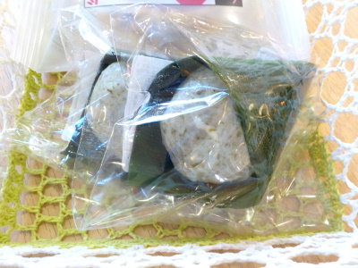
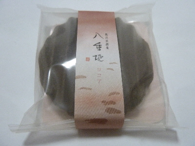
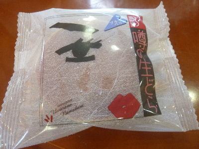
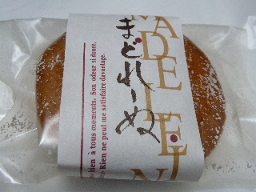
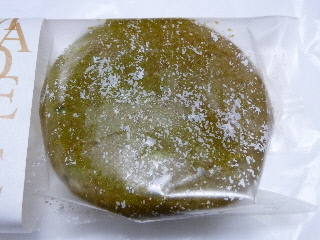
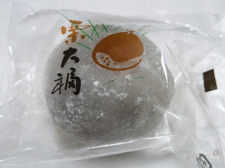
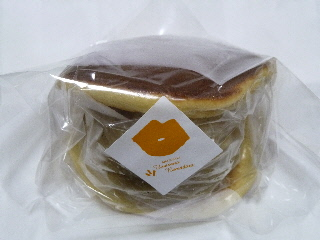

ゴールデンウィークは松葉屋で麩餅を食べました。
2023/04/30

ここの麩餅はお麩感が強かったです。お麩の美味しい味と、もちもち食感が十分楽しめました。
なめらかな餡子も美味しかったです。
島根県仁多郡奥出雲町下横田128-25
2023/04/30

ここの麩餅はお麩感が強かったです。お麩の美味しい味と、もちもち食感が十分楽しめました。
なめらかな餡子も美味しかったです。
2018/08/10
よくあるお菓子です。
お店によって名前が違うので商品名が覚えれないです。松葉屋さんは八重垣って名前です。
洋風せんべいとか、ヴァッフェルっていうのが共通の呼び名みたい。

どこのも味がほぼ同じかな。これはココア味で想像通りの味で美味しかったです。
どこで買っても期待を裏切らないのでいいですね。
2018/07/14
7/14・15・16は松葉屋本店でブルーベリー生どらが半額セールをしていました。

通常216円が108円で販売です。
ちょっと高級なので美味しくて当たり前ですが、それを考慮しても美味しいって思いました。
松葉屋の生ドラは他店の商品とはなんか別格な気がする。
生のフルーツがそのまま入ってるし、生クリームも多いので、ケーキのような感じでした。
通常価格でも買いたいと思いました。
2011/11/15
和菓子屋さんのマドレーヌです。
米粉入りです。米粉は仁多米です。
パッケージがちょっとごっつくて豪華な感じですね。

しっとりとしていますが、バターたっぷりでしっとりしているわけではないので軽いマドレーヌでした。
砂糖の味が効いてました。

抹茶味もありました。
私はこっちの方が味が濃くて好きだなって思いました。
2011/11/02
奥出雲町の和菓子屋さん「松葉屋」さんの栗大福です。

甘い栗が入った、ちょっと小さ目の栗大福でした。
餡子がとても甘かったです。大福でこの甘さはなかなかないかも？って思いました。
お茶とかコーヒーを一緒に飲むといい商品だなって思いました。
2011/11/02
紅葉の季節になったのっで、奥出雲町の松葉屋さんに行かれる人も多いんじゃないでしょうか。

モンブラン（和栗）です。
分厚いどら焼きですね。クリームがいっぱいです。
生ドラなので、栗のクリームだけじゃなくて、中にはホイップクリームも餡子も入っています。
それぞれの味がして不思議な感じがしました。
栗どらとは全然違う感じです。